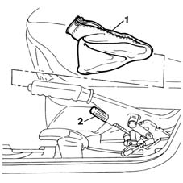
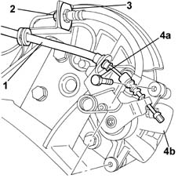

3310B34 REAR BRAKE CALIPERS - R.R. - Includes. handbrake adjustment
- Path
- Procedures > 33 BRAKING SYSTEM > 3310 DISC BRAKES > 3310B REAR DISC BRAKES > 3310B34 REAR BRAKE CALIPERS - R.R. - Includes. handbrake adjustment
- Kind
- repair procedure (removal / refitting; the operation number is the code)
- Applies to
- all engines; all production periods
- Interactive page
- https://sloeber94.github.io/elrnDB-fMltpl/en/#/2891585
Applies to: all engines; production: da 09/03, da 04/02 a 08/03
 Removing
Removing
 Refitting
RefittingPlace the car on the ramp.
Disconnect the battery negative terminal.
 | Name | Connector |
|---|---|---|
- | Battery |
1. Working from inside the vehicle, remove the protective boot for the handbrake lever.
2. Loosen the adjustment nut for the handbrake cable.

Applies to: all engines; production: da 09/03, da 04/02 a 08/03
4450B11 WHEEL (one) rear - R.R.
1. Release the handbrake cable and move aside.
2. Using the special tool, disconnect the rigid brake pipe from the brake caliper hose connector.
3. Release the brake caliper hose retaining clip.
4. Unscrew the brake caliper bolts (4a) and remove the caliper (4b).
 | Name | Country |
|---|---|---|
- | Box wrench for brake fittings | 1.856.132.000 |

Applies to: all engines; all production periods
Refitting
RemovingPosition the rear brake caliper (one) and tighten the retaining bolts to torque.
 | Fastening | Component | Ø | Value (daNm) |
|---|---|---|---|---|
- | Bolt | REAR BRAKE CALIPER | M10 | 5.7 |
Secure the brake caliper connection to the retaining clip.
Using the special tool tighten to torque the rigid brake pipe to the brake caliper flexible connector.
| Name | Country |
|---|---|---|
- | Box wrench for brake fittings | 1.856.132.000 |
| Fastening | Component | Ø | Value (daNm) |
|---|---|---|---|---|
- | Connector | REAR BRAKE CALIPER | M10 | 1.6 |
Secure the handbrake cable to the housing.
3380A04 handbrake - check travel
4450B11 WHEEL (one) rear - R.R.
Connect the battery negative terminal.
| Name | Connector |
|---|---|---|
- | Battery |
Remove the car from the ramps.